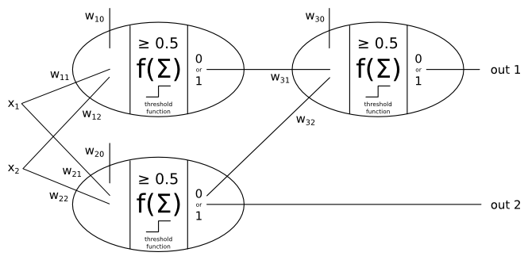

Homework 9
Task 1 (10 pts)
Draw a single perceptron that computes the OR function.
Be sure to give the weights of the two inputs and the bias term. Assume the threshold function is that demonstrated in the lecture notes (where a sum ≥0.5 causes a 1 to be output, otherwise a 0).
Task 2 (20 pts)
Draw a small perceptron network that computes addition of two one-bit numbers. This cannot be done with only one perceptron. Here is the table of inputs/outputs:
| \(x_1\) | \(x_2\) | out 1 | out 2 (carry bit) |
|---|---|---|---|
| 0 | 0 | 0 | 0 |
| 0 | 1 | 1 | 0 |
| 1 | 0 | 1 | 0 |
| 1 | 1 | 0 | 1 |
Use this perceptron configuration. Determine all the weights.

Task 3 (70 pts)
Write a single-layer perceptron network learning algorithm. Use the perceptron learning rule from the lecture notes.
The input file is specified on the command line. Its format is:
5620 64 10 0 1 6 15 12 1 0 0 0 7 16 6 6 10 0 0 0 8 16 2 0 11 2 0 0 5 16 3 0 5 7 0 0 7 13 3 0 8 7 0 0 4 12 0 1 13 5 0 0 0 14 9 15 9 0 0 0 0 6 14 7 1 0 0 1 0 0 0 0 0 0 0 0 0 0 0 10 16 6 0 0 0 0 7 16 8 16 5 0 0 0 11 16 0 6 14 3 0 0 12 12 0 0 11 11 0 0 12 12 0 0 8 12 0 0 7 15 1 0 13 11 0 0 0 16 8 10 15 3 0 0 0 10 16 15 3 0 0 1 0 0 0 0 0 0 0 0 0 ...
The first number, 5620, is the number of examples in the file, with one example per line, starting on the second line. The second number, 64, is the number of inputs (or “features”) for each example. The inputs are floating-point values (which includes integers). The third number, 10, is the number of binary outputs for each example.
The input file (partially) shown here is from the optdigits.dat (handwritten digits) input file (from UCI). Each example has 64 integers representing pixels followed by 10 binary numbers (0/1), such that the only 1 in this group of binary numbers is in the position N, and this N is the true digit of the example. So if the example is the digit 2, then the binary numbers are: “0 0 1 0 0 0 0 0 0 0 0” (first binary number indicates digit 0, then 1, then 2, etc.).
I have written templates for you to start with: C++, Java, and Python. (Words of wisdom: Python is horrendously slow; my experiments with this assignment show it to be 30 times slower than Java.) These templates load the data file, build the examples data structure, and print the weights of the trained network. You need to build the network, train it, and finish the code that tests reserved instances from the input file.
With \(\alpha=0.01\) or so, and about 1000 epochs or so, you should be able to achieve ~80% correctness.
You can also test, for debugging purposes, the and.dat, or.dat, and not.dat cases. Your network should be able to learn these with 100% correctness.